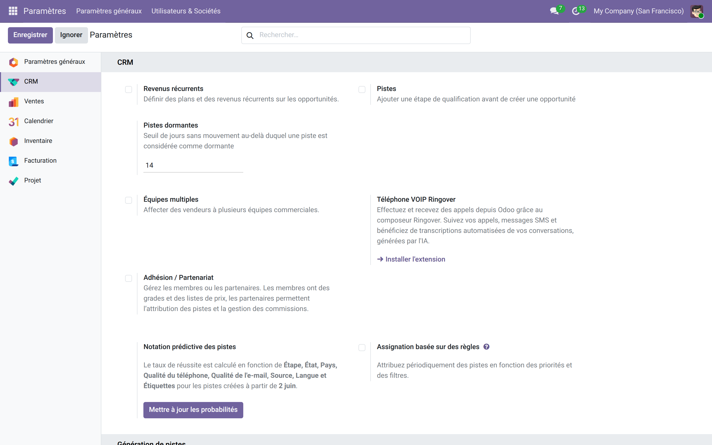

Détecte les opportunités sans mouvement : seuil configurable, colonne d'inactivité et filtre de relance.
Un pipeline en bonne santé est un pipeline qui bouge. Ce module mesure l'inactivité de chaque opportunité (jours écoulés depuis le dernier changement d'étape) et met en évidence celles qui dorment, avec un seuil réglable par vos soins — indépendant du mécanisme interne d'Odoo.
Dans Réglages → CRM, définissez le nombre de jours au-delà duquel une opportunité est considérée comme dormante.

La vue liste affiche les jours d'inactivité de chaque opportunité ; les dormantes ressortent en surbrillance.
Le filtre « Dormantes » isole les opportunités à réveiller : idéal pour une routine de relance hebdomadaire.

addons_path.Licence LGPL-3 — compatible Odoo 15.0 à 19.0.